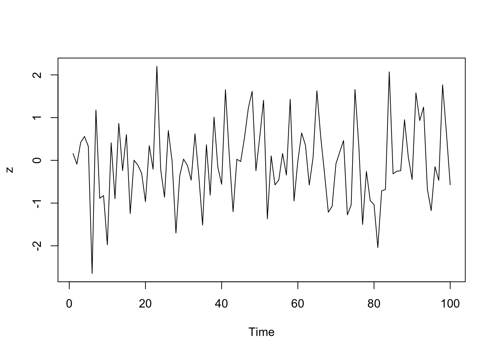
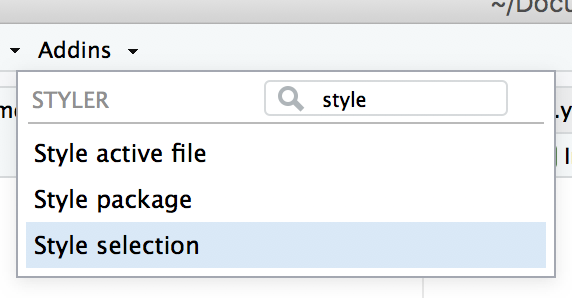

Aula 5
2022-07-18
Capítulo 1 Pipes
1.1 Origem do Pipe
O conceito de pipe existe pelo menos desde os anos 1970, quando Douglas McIlroy originalmente propôs os pipelines no Unix. O operador tinha o objetivo de simplificar comandos cujos resultados deveriam ser passados para outros comandos.
Por essa descrição já conseguimos ter uma ideia de onde vem o seu nome: pipe em inglês significa “cano”, referindo-se ao transporte das saídas dos comandos. Em portugês o termo é traduzido como “canalização” ou “encadeamento”, mas no dia-a-dia é mais comum usar o termo em inglês.
A partir daí o pipe tem aparecido nas mais diversas aplicações, desde HTML até o R. Ele pode ter várias aparências, mas o seu objetivo é sempre o mesmo: transportar resultados.
No R o pipe tem um símbolo um pouco estranho (%>%), mas no fundo ele não passa de uma função infixa, ou seja, uma função que aparece entre os seus argumentos (como a + b ou a %in% b). Na verdade é por isso mesmo que ele tem porcentagens antes e depois: porque no R uma função infixa só pode ser declarada assim, entre parêntesis.
1.2 Pacote magrittr

O pacote magrittr fornece um conjunto de operadores que tornam seu código mais fácil de ler.
Por quê?
- Cria sequências estruturais de operações (pipelines ou “encanamentos”) da esquerda para a direita (em vez de dentro pra fora);
- evita chamar funções aninhadas;
- minimiza a necessidade de variáveis locais e definição de funções;
- torna mais fácil adicionar etapas em qualquer local da sequência de operações.
Os pipes conectam os valores da esquerda em expressões que aparecem do lado direito, i.e. podemos substituir f(x) com x %>% f(), onde %>% é o operador pipe.
Vamos começar demonstrando sua funcionalidade básica. Carregue o pacote magrittr e declare o pipe usando Ctrl + Shift + M.
library(magrittr)
mais_tres <- function(x) { x + 3 }
sobre_dois <- function(x) { x / 2 }
x <- 1:3
sobre_dois(mais_tres(x))## [1] 2.0 2.5 3.0Perceba como fica difícil de entender o que está acontecendo primeiro? A linha relevante começa com a divisão por 2, depois vem a soma com 3 e, por fim, os valores de entrada.
É muito mais legível quando as funções são exibidas na ordem em que serão aplicadas.
Isso pode ser realizado se tivermos uma função que passa o resultado do que está à sua esquerda para a função que está à sua direita:
x %>% mais_tres() %>% sobre_dois()Ao juntar diversas funções com o pipe, o benefício torna-se mais aparente. Considere o exemplo abaixo:
clima %>%
filter(origem %in% 'JFK') %>%
mutate(temp_celsius = (temperatura - 32) * 5/9) %>%
head(5)## # A tibble: 5 × 16
## origem ano mes dia hora temperatura ponto_condensacao umidade
## <chr> <int> <int> <int> <int> <dbl> <dbl> <dbl>
## 1 JFK 2013 1 1 1 39.0 26.1 59.4
## 2 JFK 2013 1 1 2 39.0 26.1 59.4
## 3 JFK 2013 1 1 3 39.9 27.0 59.5
## 4 JFK 2013 1 1 4 39.9 28.0 62.2
## 5 JFK 2013 1 1 5 39.0 27.0 61.6
## # … with 8 more variables: direcao_vento <dbl>, velocidade_vento <dbl>,
## # velocidade_rajada <dbl>, precipitacao <dbl>, pressao <dbl>,
## # visibilidade <dbl>, data_hora <dttm>, temp_celsius <dbl>Quatro operações são realizadas para chegar ao conjunto de dados desejado, e elas são escritas em uma ordem natural: a mesma ordem de sua execução. Além disso, nenhuma variável temporária é necessária. Se necessitarmos de mais uma operação, é fácil incluí-la na sequência de operações, em qualquer local necessário.
1.3 Antes do pipe
Como as pessoas escreviam seus códigos antes do pipe?
Usando o pacote pinguins, calcule a média da massa corporal dos pinguins da
espécie “Pinguim-de-adélia” em diferentes ilhas.
Primeiro, vamos ler nossa base e visualizá-la:
pinguins## # A tibble: 344 × 8
## especie ilha comprimento_bico profundidade_bi… comprimento_nad…
## <fct> <fct> <dbl> <dbl> <int>
## 1 Pinguim-de-adélia Torgers… 39.1 18.7 181
## 2 Pinguim-de-adélia Torgers… 39.5 17.4 186
## 3 Pinguim-de-adélia Torgers… 40.3 18 195
## 4 Pinguim-de-adélia Torgers… NA NA NA
## 5 Pinguim-de-adélia Torgers… 36.7 19.3 193
## 6 Pinguim-de-adélia Torgers… 39.3 20.6 190
## 7 Pinguim-de-adélia Torgers… 38.9 17.8 181
## 8 Pinguim-de-adélia Torgers… 39.2 19.6 195
## 9 Pinguim-de-adélia Torgers… 34.1 18.1 193
## 10 Pinguim-de-adélia Torgers… 42 20.2 190
## # … with 334 more rows, and 3 more variables: massa_corporal <int>, sexo <fct>,
## # ano <int>Podemos decompor nosso problema em uma séria de etapas:
- Filtrar pinguins para manter as observações da espécia “Adélia”.
- Agrupar os pinguins filtrados por ilha.
- Sumarizar os pinguins agrupados e filtrados calculando a média da massa corporal.
Mas como implementamos esse código?
1.3.1 Etapas intermediárias
Uma opção é salvar cada etapa como um novo objeto:
pinguins_1 <- filter(pinguins, especie %in% "Pinguim-de-adélia")
pinguins_2 <- group_by(pinguins_1, ilha)
(pinguins_3 <- summarise(pinguins_2, media_mc = mean(massa_corporal, na.rm = TRUE)))## # A tibble: 3 × 2
## ilha media_mc
## <fct> <dbl>
## 1 Biscoe 3710.
## 2 Dream 3688.
## 3 Torgersen 3706.Por que não gostamos de fazer isso?
- Precisamos nomear cada objeto intermediário.
- Aqui criamos um número como sufixo do nome do objeto, o que não é um bom método de auto documentação.
- O que esperamos encontrar em penguins_2? Seria mais interessante um nome mais informativo, no entanto não temos um.
- Temos que lembrar como cada base existe em cada etapa intermediária e lembrar de referenciar a correta. O que acontece se identificarmos a base errada?
pinguins_1 <- filter(pinguins, especie == "Pinguim-de-adélia")
pinguins_2 <- group_by(pinguins_1, ilha)
(pinguins_3 <- summarise(pinguins_1, media_mc = mean(massa_corporal, na.rm = TRUE)))## # A tibble: 1 × 1
## media_mc
## <dbl>
## 1 3701.Não obtemos a resposta correta. Pior, não temos uma mensagem de um erro explícita porque o código funciona. O R executa o comando no entanto não sabe nos alertar que usamos a base errada.
1.3.2 Subtituição da base original
Em vez de criar objetos intermediários, vamos substituir a base original com sua modificação.
pinguins <- filter(pinguins, especie == "Pinguim-de-adélia")
pinguins <- group_by(pinguins, ilha)
(pinguins <- summarise(pinguins, media_mc = mean(massa_corporal, na.rm = TRUE)))## # A tibble: 3 × 2
## ilha media_mc
## <fct> <dbl>
## 1 Biscoe 3710.
## 2 Dream 3688.
## 3 Torgersen 3706.Isso funciona, mas ainda apresenta alguns problemas.
- O que acontece se cometermos um erro no meio da operação? Teremos que rodar toda a operação desde a leitura da base original.
1.3.3 Criação de função
Podemos criar uma função agrupando todas as funções em um único objeto e
We could string all the function calls together into a single object and forget assigning it anywhere.
rm(pinguins)
summarise(
group_by(
filter(
pinguins,
especie== "Pinguim-de-adélia"
),
ilha
),
media_mc = mean(massa_corporal, na.rm = TRUE)
)## # A tibble: 3 × 2
## ilha media_mc
## <fct> <dbl>
## 1 Biscoe 3710.
## 2 Dream 3688.
## 3 Torgersen 3706.Agora temos que ler a função de dentro para fora. Isso não é intuitivo.
1.3.4 Uso do pipe
pinguins %>%
filter(especie == "Pinguim-de-adélia") %>%
group_by(ilha) %>%
summarize(media_mc = mean(massa_corporal, na.rm = TRUE))## # A tibble: 3 × 2
## ilha media_mc
## <fct> <dbl>
## 1 Biscoe 3710.
## 2 Dream 3688.
## 3 Torgersen 3706.Utilização de pipe é a sintaxe mais clara para de se implementar, porque foca em ações e não objetos.
Hadley diz: “[I]t focuses on verbs, not nouns.”
Foca em verbos, e não em substantivos.
O pipe automaticamente passa o output (saída) da primeira linha como (entrada) da linha seguinte.
Por isso, as funções do tidyverse sempre aceitam um data frame como o primeiro argumento.
1.4 Maneiras de utilizar o pipe
1.4.1 Piping básico
x %>% fé equivalente af(x)x %>% f(y)é equivalente af(x, y)x %>% f %>% g %>% hé equivalente ah(g(f(x)))
1.4.2 O marcador de posição do argumento
x %>% f(y, .)é equivalente af(y, x)x %>% f(y, z = .)é equivalente af(y, z = x)
1.4.3 Reutilizando o espaço reservado para atributos
É simples usar o espaço reservado várias vezes em uma expressão do lado direito. No entanto, quando o espaço reservado só aparece em expressões aninhadas, o magrittr ainda aplicará a regra do primeiro argumento. A razão é que, na maioria dos casos, isso resulta em um código mais limpo.
x %>% f(y = nrow(.), z = ncol(.)) é equivalente a
f(x, y = nrow(x), z = ncol(x))
O comportamento pode ser anulado colocando o lado direito entre chaves:
x %>% {f(y = nrow(.), z = ncol(.))} é equivalente a
f(y = nrow(x), z = ncol(x))
1.4.4 Construir funções
Qualquer pipeline que comece com . retornará uma função que pode ser usada posteriormente para aplicar o pipeline a valores. A construção de funções em magrittr é, portanto, semelhante à construção de outros valores.
f <- . %>% cos %>% sin
# é equivalente a
f <- function(.) sin(cos(.)) 1.4.5 Pipe com exposição de variáveis
Muitas funções aceitam um argumento de dados, por exemplo. lm e aggregate,
que é muito útil em um pipeline onde os dados são processados primeiro e depois
passados para tal função. Existem também funções que não possuem argumento de
dados, para as quais é útil expor as variáveis nos dados. Isso é feito com o
operador %$%:
iris %>%
subset(Sepal.Length > mean(Sepal.Length)) %>%
cor(Sepal.Length, Sepal.Width)## Error in pmatch(use, c("all.obs", "complete.obs", "pairwise.complete.obs", : object 'Sepal.Width' not foundiris %>%
subset(Sepal.Length > mean(Sepal.Length)) %$%
cor(Sepal.Length, Sepal.Width)## [1] 0.3361992data.frame(z = rnorm(100)) %$%
ts.plot(z)
1.5 Estilo de programação
Recomendações do próprio Hadley Wickham no livro: The tidyverse style guide
Um bom estilo de programação é comparável a uma pontuação correta: você pode entender o texto sem ela, noentantoelatornaascoisasmuitosmaisfáceisdeseremlidas.
Todos os guias de estilo são fudamentalmente opinativos. Algumas decisões tornam programar genuinamente mais fácil (especialmente quando correspondemos recuos com a estrutura), mas muitas decisões são arbitrárias. O mais importante em um guideline de estilo é que ele fornece consistência, tornando a programação mais fácil de escrever porque você precisa tomar menos decisões.
Dois pacotes de R suportam esse estilo:
styler permite que você corrija interativamente o estilo de um texto selecionado, arquivos, ou projetos inteiros. Ele inclui um add-in no RStudio, a forma mais fácil de re-estilizar um código existente.

lintr realiza checagens automáticas para confirmar que o seu código está conforme o estilo.
1.5.1 Pipes e estilo de programação
Utilize %>% para enfatizar a sequência de ações, em vez do objeto nos quais estão sendo realizadas.
Evite utilizar o pipe quando:
Você precisa manipular mais de um objeto ao mesmo tempo. Limite a utilização de pipes para uma sequência de etapas aplicadas a um objeto primário.
Existem objetos intermediários significativos que podem ser dados nomes informativos.
1.5.1.1 Espaço em branco
%>% deve ser sempre precedido de um espaço em branco, e sempre sucedido por uma nova linha.
Após a primeira etapa, cada linha deve ser indexada por dois espaços. Essa estrutura torna mais fácil a adição de novas etapas (ou rearranjar etapas existentes) e torna mais difícil de ignorar uma etapa.
# Bom
iris %>%
group_by(Species) %>%
summarize_if(is.numeric, mean) %>%
ungroup() %>%
gather(measure, value, -Species) %>%
arrange(value)
# Ruim
iris %>% group_by(Species) %>% summarize_all(mean) %>%
ungroup %>% gather(measure, value, -Species) %>%
arrange(value)1.5.1.2 Linhas muito longas
Se os argumentos de uma função não cabem em uma linha, coloque cada argumento em sua própria linha e recue:
iris %>%
group_by(Species) %>%
summarise(
Sepal.Length = mean(Sepal.Length),
Sepal.Width = mean(Sepal.Width),
Species = n_distinct(Species)
)1.5.1.3 Pipes curtos
Um pipe de apenas uma etapa pode permanecer em uma linha, mas a não ser que você pretenda expandir ele posteriormente, você deve considerar reescrever seu código como uma função.
# Bom
iris %>% arrange(Species)
iris %>%
arrange(Species)
arrange(iris, Species)Às vezes é útil incluir um pipe curto como um argumento de uma função em um pipe maior. Considere cuidadosamente se o código é mais legível com um pipe curto de uma linha ou se é melhor mover o código para fora do pipe e dar um nome evocativo.
# Bom
x %>%
select(a, b, w) %>%
left_join(y %>% select(a, b, v), by = c("a", "b"))
# Melhor
x_join <- x %>% select(a, b, w)
y_join <- y %>% select(a, b, v)
left_join(x_join, y_join, by = c("a", "b"))1.5.2 Atribuição
Existem três tipos aceitáveis de atribuição:
Nome da variável e atribuição em linhas separadas:
iris_long <- iris %>% gather(measure, value, -Species) %>% arrange(-value)Nome da variável e atribuição na mesma linha:
iris_long <- iris %>% gather(measure, value, -Species) %>% arrange(-value)Atribuição no final do pipe com
->:iris %>% gather(measure, value, -Species) %>% arrange(-value) -> iris_longTalvez seja a maneira mais natural de escrever, mas torna a leitura mais difícil: quando o nome vem primeiro ele age como um cabeçalho para lembrar o propósito do pipe.
O pacote magrittr fornece o operador %<>% como um atalho para modificar um objeto. Evite esse operador.
# Bom
x <- x %>%
abs() %>%
sort()
# Ruim
x %<>%
abs() %>%
sort()